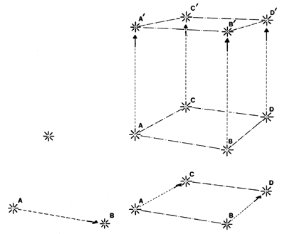

Fig 527.703 Imaginary Three Dimensionality: Parallel and perpendicular construction strategies of "plane" and "solid" geometry assume that reality can be measured only in cubes.
Copyright © 1997 Estate of R. Buckminster Fuller